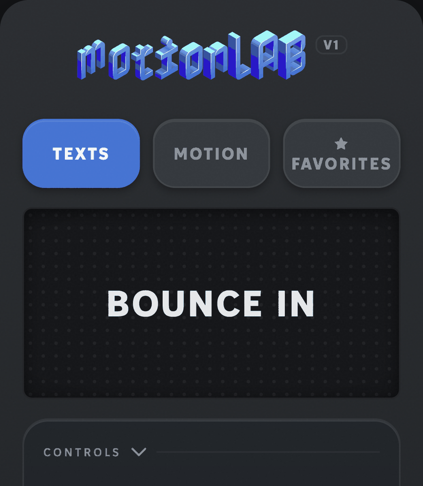

Tape ton texte
Écris directement dans le panel : le texte de preview est éditable, tu vois l'animation sur tes propres mots.
MotionLABV1
Dix animations de texte prêtes à poser, huit outils d'animation, un seul panel pour After Effects et Premiere Pro.
39 € · paiement unique · à toi pour toujours

Le même workflow dans les deux applications.
Écris directement dans le panel : le texte de preview est éditable, tu vois l'animation sur tes propres mots.
Un preset parmi les dix, la vitesse de 0,5× à 2×, l'intensité selon le preset, le mode mot ou lettre par lettre.
Dans After Effects, l'animation se pose en vraies keyframes sur ton calque. Dans Premiere Pro, en titre animé directement sur ta timeline.
Tu tapes ton texte, tu choisis, tu règles la vitesse, tu cliques ADD. Survole les tuiles : chacune joue sa propre animation.
SPLIT : six des dix presets s'animent aussi lettre par lettre, avec un décalage réglable entre chaque lettre — dans After Effects comme dans Premiere Pro.
Les dix presets sortent du même moteur : même famille de courbes, mêmes conventions d'amorti, même sens du timing.
Tu peux les mélanger dans un même montage — ils auront toujours l'air de venir de la même main.
Et réglables sans casser : vitesse de 0,5× à 2×, intensité par preset — tu adaptes, la signature reste.

Un seul fichier à installer. Le panel détecte l'application et s'adapte — mêmes presets, mêmes réglages.
Les manipulations que tu refais cent fois par montage, réduites à un clic.
Recadre la composition sur ton calque, sans calcul.
Étire le calque plein cadre en gardant les proportions.
Aussi dans PremiereAmène le calque pile sur la tête de lecture.
Aussi dans PremiereCentre le calque dans la composition, net.
Ajoute un rebond physique à n'importe quel calque.
Tremblement organique, amplitude et fréquence réglables.
Anime le long d'un tracé — avec de vraies clés de position que tu peux retoucher.
Décale tes calques en cascade, d'un coup.
Aussi dans PremiereDans Premiere Pro, les outils compatibles avec la timeline sont marqués — les autres travaillent sur les calques After Effects.
Je refaisais les mêmes titres à la main, montage après montage. MotionLAB, c'est ces gestes-là réduits à un clic — pour que mon temps aille à la création, pas à la technique.
Développé et testé sur After Effects 2025 et Premiere Pro 2025 (Mac). Un souci avec ta config ? Écris-moi, on regarde ensemble.
Télécharge ZXP Installer (gratuit, par aescripts) — c'est l'installeur standard des extensions Adobe.
Glisse MotionLAB.zxp dans la fenêtre de ZXP Installer. C'est tout.
Relance After Effects ou Premiere Pro, puis ouvre Fenêtre → Extensions → MotionLAB. Le panel se docke où tu veux.
MOTION — une bibliothèque d'animations prêtes à poser (intros, cartes, éléments graphiques), directement dans le panel. Elle arrivera dans une mise à jour gratuite pour tous ceux qui ont la V1.
Oui. C'est le même fichier .zxp : une fois installé, le panel apparaît dans After Effects et dans Premiere Pro. Dans After Effects il pose de vraies keyframes ; dans Premiere il pose un titre animé sur la timeline, modifiable dans Essential Graphics.
MotionLAB est développé et testé sur After Effects 2025 et Premiere Pro 2025 (Mac). Si ta version pose problème, écris-moi — je regarde avec toi : hello@imfemz.com.
Oui. Projets clients, contenus monétisés : aucune restriction d'usage. La seule limite : ne pas revendre ni repartager le fichier lui-même.
Immédiatement. Le paiement passe par Podia : tu télécharges le .zxp juste après l'achat, et tu peux le re-télécharger à tout moment depuis ton compte.
Toutes les mises à jour de la V1 sont incluses — la bibliothèque MOTION comprise. Tu re-télécharges simplement le fichier depuis ton compte, et tu le réinstalles par-dessus.
MotionLAB est un fichier numérique, il n'y a donc pas de remboursement automatique. Mais si quelque chose coince, écris-moi — on trouve une solution. Le détail est dans les CGV.
Écris-moi à hello@imfemz.com ou passe sur le Discord FemzLab — on débloque ça ensemble.
Paiement unique · Checkout sécurisé via Podia